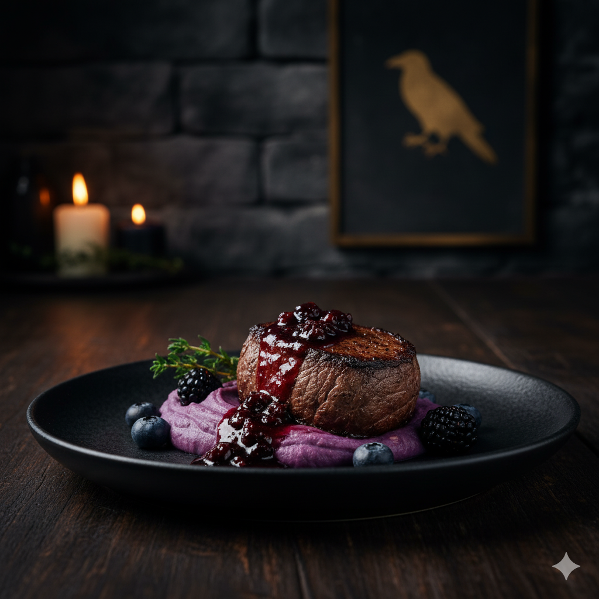
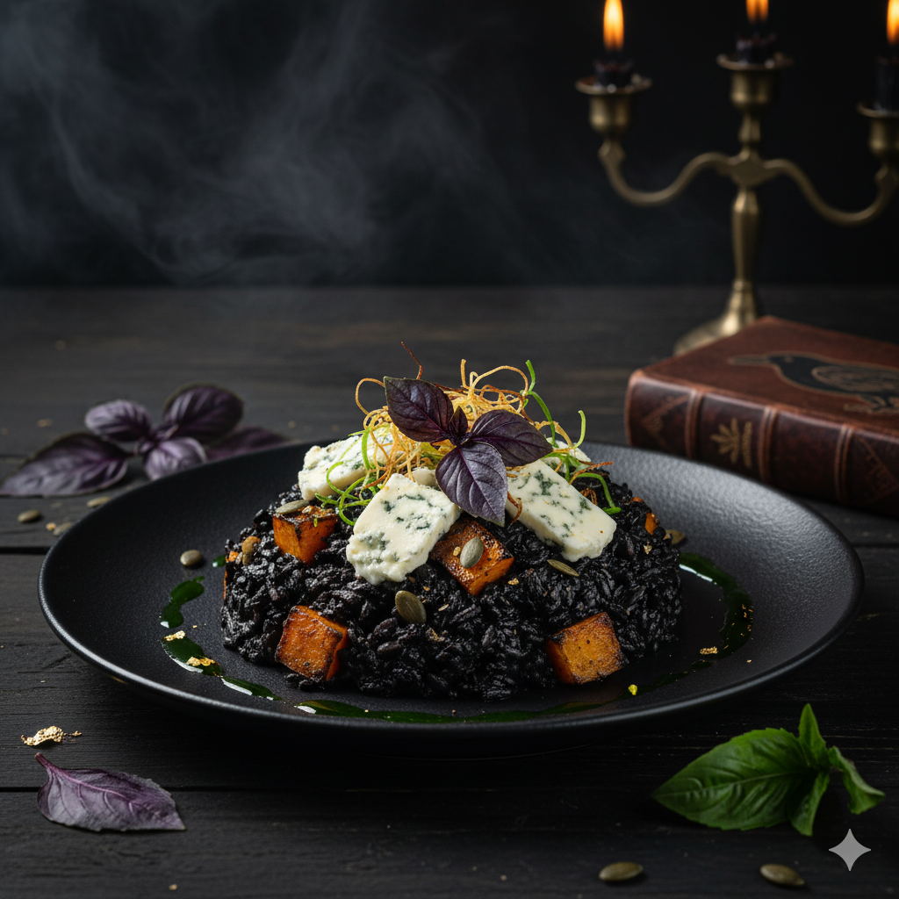
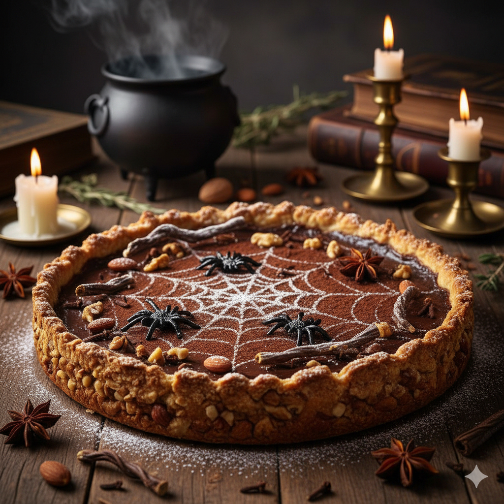
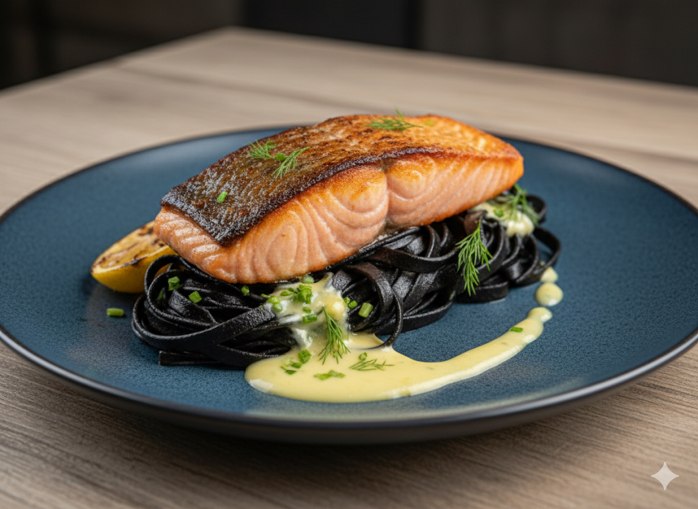
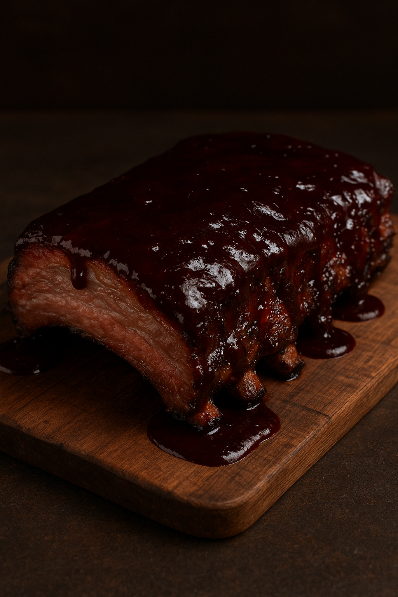

| Prato |
Descrição |
Preço |
| O Lamento do Corvo |

filé-mignon grelhado, com molho de frutas vermelhas e vinho tinto,
servido sobre purê de batata-doce roxa.
|
R$ 78,00 |
| O Segredo do Necromant |

sofisticado risoto de arroz negro com abóbora assada e queijo
gorgonzola.
|
R$ 65,00 |
| A Torta da Bruxa |
Uma torta de chocolate intensa com especiarias e uma crosta
crocante de nozes.
|
R$ 32,00 |
| Peixe da Meia-Noite |
Posta de salmão selada, acompanhada de tagliatelle na tinta de
lula e molho de limão siciliano.
|
R$ 85,00 |
| Costela do Cemitério |

Costela de porco defumada em baixa temperatura, coberta com molho
barbecue de jabuticaba.
|
R$ 88,00 |